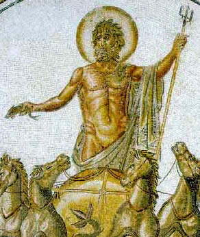

saturday
Saturday was one of three days whose name was not copied from the Norse gods. Saturday was derived from the Roman god Saturni whose namesake was given to the planet. The day was referred to as "dies Saturni" which translates into "Day of Saturn". The Greek god equivalent was Cronus and was the father of Zues. Saturni was considered the god of time, harvest, wealth, and in English translates into "washing-day".